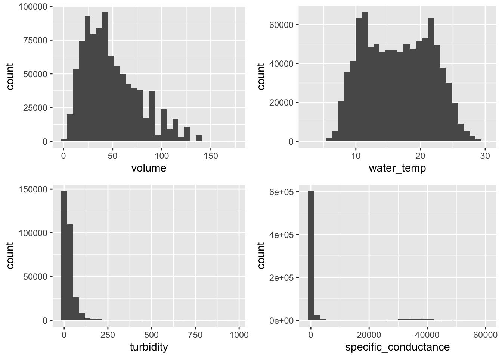
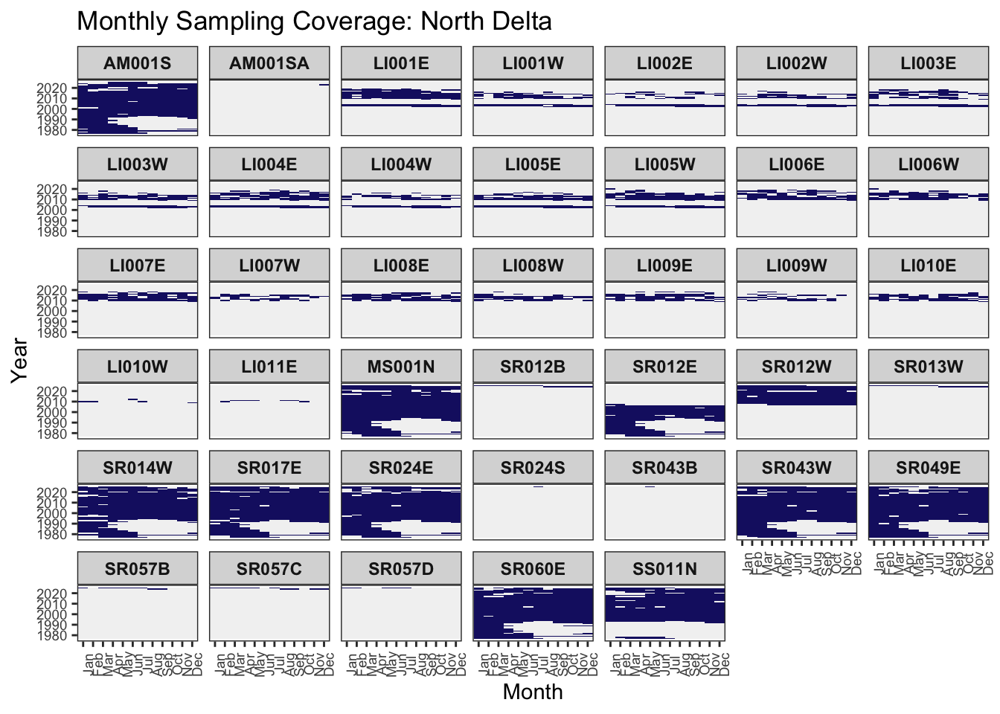
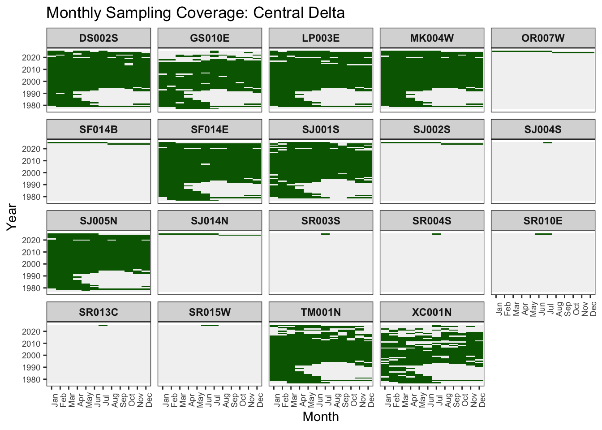
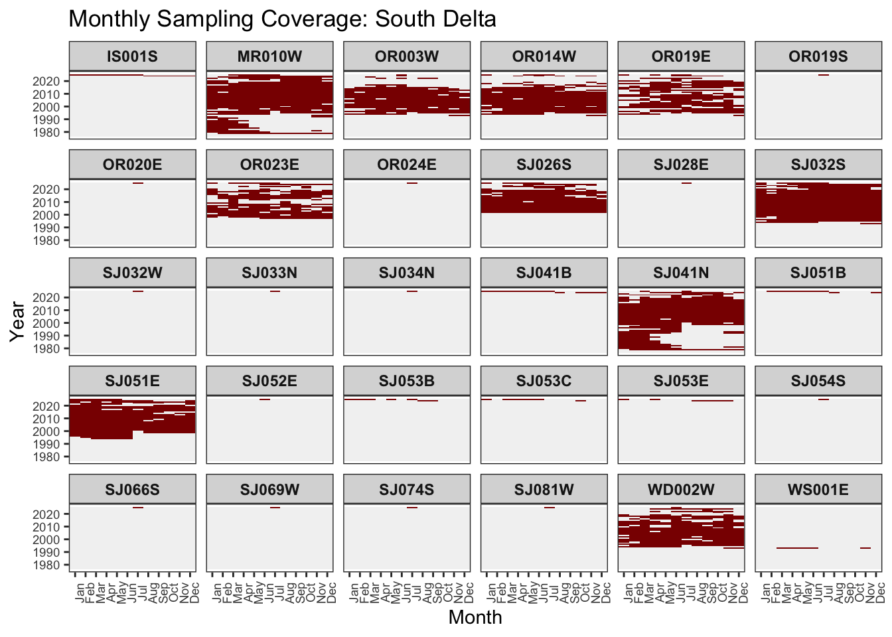
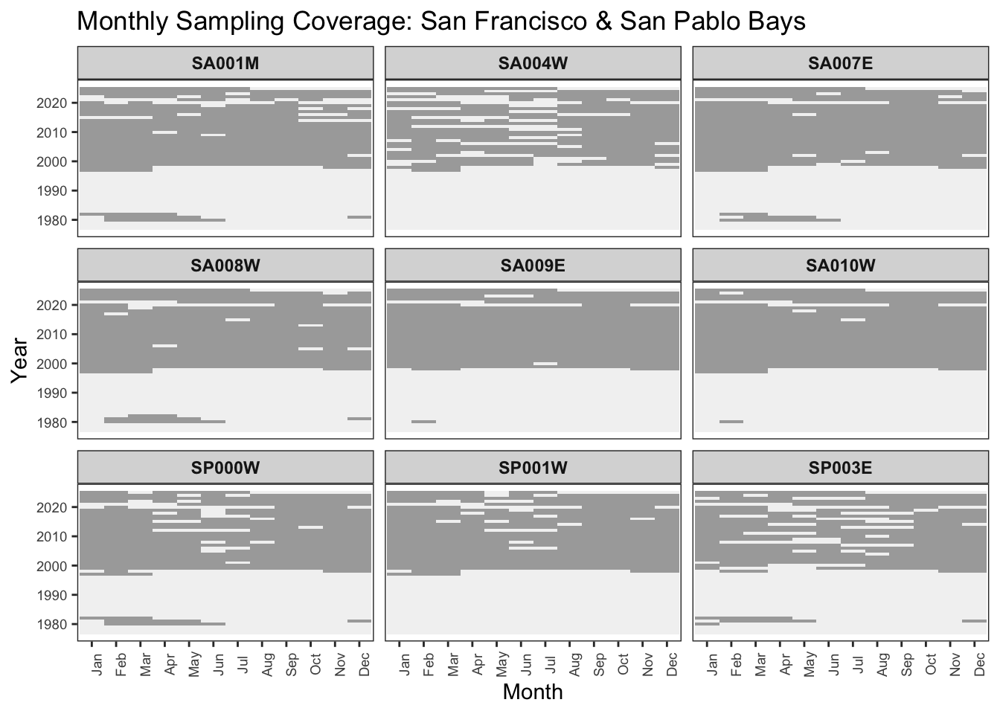
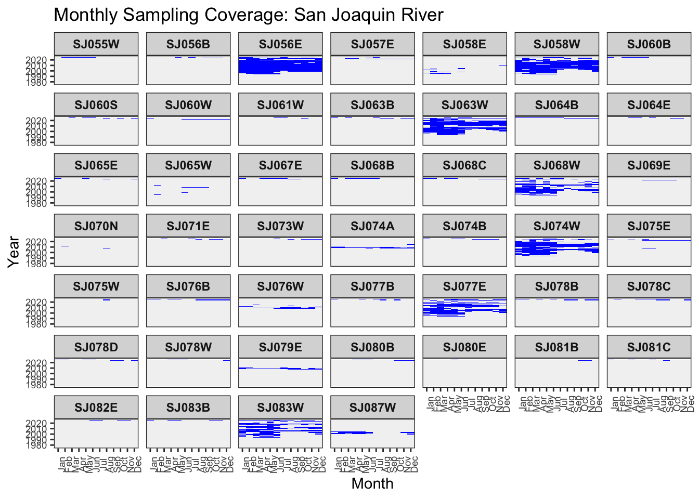
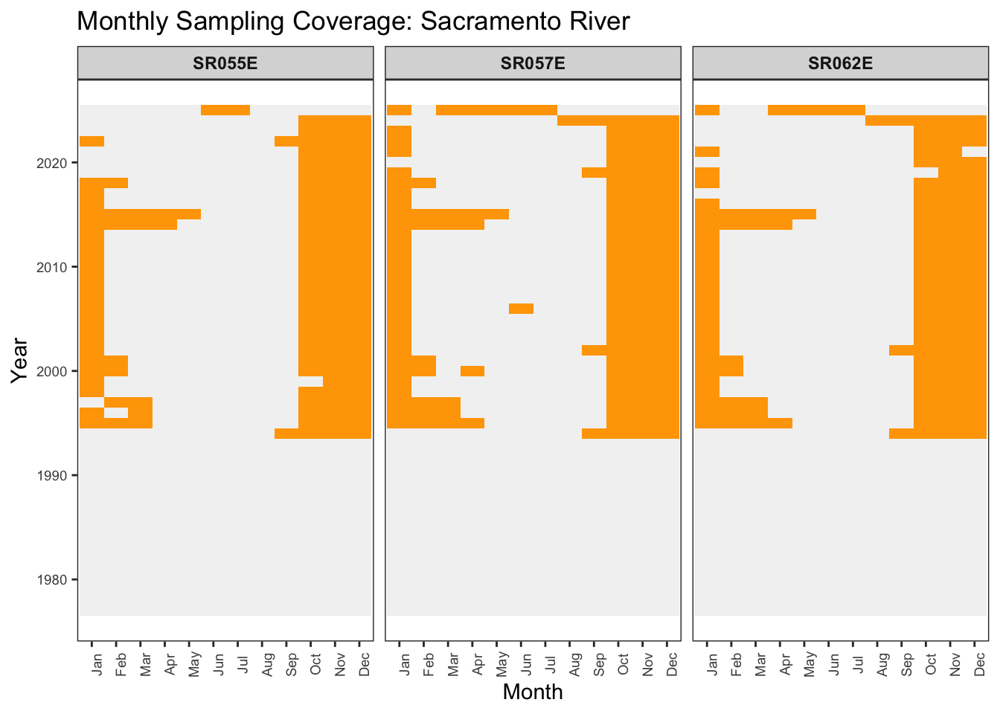
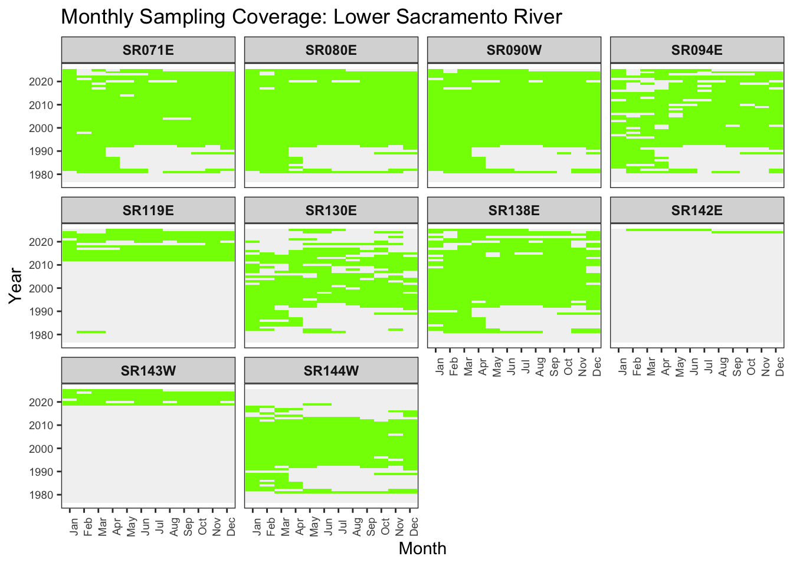

library(tidyverse)
library(janitor)
library(here)
library(chron)
library(gridExtra)
raw <-
read_rds(here("salmon/data/raw/dt3.rds")) %>%
# provide good names
clean_names() %>%
# chng region & station to chr (factors interfere w regularization later)
# fix date & time variables, originally as chr
mutate(region = as.character(region_code),
station = as.character(station_code),
date = mdy(sample_date),
time = times(sample_time),
.keep = "unused") %>%
# generate a sample unit (unique seine event) code
group_by(station, date, time) %>%
mutate(id_code = cur_group_id()) %>%
relocate(id_code, station, location, date, time) %>%
ungroup() %>%
write_rds(., here("salmon/data/raw/raw.rds"))beach seine sites
tidy beach seine data
The beach seine data, as downloaded from EDI and using their code, has some issues with variable type and naming. This code addresses these issues and saves the beach seine data as raw.rds.
check data quality
Run some quick checks on methodological and environmental data. The high values for specific_conductance appear to be from SF Bay (ie where you’d expect to find high values).
# estimated volume of the seine effort
vol <- ggplot(raw,
aes(volume)) +
geom_histogram()
# water temperature (deg C)
temperature <-
ggplot(raw,
aes(water_temp)) +
geom_histogram()
# turbidity
turb <-
ggplot(raw,
aes(turbidity)) +
geom_histogram()
# specific conductance
cond <-
ggplot(raw,
aes(specific_conductance)) +
geom_histogram()
# arrange graphs
grid.arrange(vol, temperature, turb, cond, ncol = 2, nrow = 2)
rm(vol, temperature, turb, cond)temporal & spatial effort
Regularize the time series, and identify the months for which each site was sampled and not sampled. Add descriptions for regions. The file coverage.rds is a regularized time series showing which station/year/months were and weren’t sampled.
# define and create a path for processed data
path <- here("salmon/data/processed")
dir.create(path)Warning in dir.create(path):
'/Users/diomedes/Library/CloudStorage/OneDrive-CaliforniaDepartmentofWaterResources/3-Projects/09-first
flush/FirstFlush/salmon/data/processed' already exists# create monthly coverage indicator and retain region
# this is an irregular time series-no rows when sites weren't sampled
coverage_irreg <- raw %>%
distinct(
station, year = year(date), month = month(date), region) %>%
# 'tag' months sampled
mutate(sampled = 1)
# create tibble of station and region for later use
# 1= Lower Sacramento River, 2= North Delta, 3= Central Delta, 4= South Delta,
# 5= San Joaquin River, 6= Bay Area, 7= Sacramento River
sta_reg <-
coverage_irreg %>%
distinct(station, region) %>%
left_join(
tibble(
region = factor(1:7),
region_label = factor(c("Lower Sac", "N Delta", "Cen Delta", "S Delta",
"SJR", "SF & SP Bays", "Sac R"))
),
by = "region"
) %>%
write_rds(., here("salmon/data/processed/sta_reg.rds"))
# regularize ts
coverage <-
coverage_irreg %>%
# regularize the time series w complete()
complete(
station,
# add missing years
year = min(year):max(year),
# add missing months
month = 1:12,
# enter '0' for station/year/months that weren't sampled
fill = list(sampled = 0)
) %>%
# add region code for unsampled station/year/months (lost w regularization)
rows_patch(sta_reg %>% select(station, region), by = "station") %>%
# add region_label
left_join(sta_reg %>% distinct(region, region_label), by = "region") %>%
mutate(
month_label = factor(month, levels = 1:12, labels = month.abb),
region_label = fct_relevel(
region_label, "Sac R",
"Lower Sac", "N Delta", "Cen Delta",
"SJR", "S Delta", "SF & SP Bays"
)
) %>%
write_rds(., here("salmon/data/processed/coverage.rds"))plot
effort
Plot monthly coverage for all beach sites.
# generate calendar-style heat map
# months run horizontally, years vertically
# too many sites to adequately display the information, so divide them between
# northerly sites and southerly ones
# North Delta effort
coverage %>%
filter(region_label == "N Delta",
year >= 1977) %>%
mutate(month_label =
factor(month, levels = 1:12, labels = month.abb)) %>%
ggplot(aes(month_label, year, fill = factor(sampled))) +
geom_tile(color = NA) +
facet_wrap(~station) +
scale_fill_manual(values = c("0" = "grey95", "1" = "midnightblue"), guide = "none") +
labs(
x = "Month",
y = "Year",
title = "Monthly Sampling Coverage: North Delta"
) +
theme_bw() +
theme(
panel.grid = element_blank(),
strip.text = element_text(face = "bold"),
axis.text.x = element_text(size = 7, angle = 90),
axis.text.y = element_text(size = 7)
)
n_delta <- c("AM001S", "MS001N", "SR014W", "SR017E",
"SR024E", "SR043W", "SR049E", "SR060E")
# Central Delta effort
coverage %>%
filter(region_label == "Cen Delta",
year >= 1977) %>%
mutate(month_label =
factor(month, levels = 1:12, labels = month.abb)) %>%
ggplot(aes(month_label, year, fill = factor(sampled))) +
geom_tile(color = NA) +
facet_wrap(~station) +
scale_fill_manual(values = c("0" = "grey95", "1" = "darkgreen"), guide = "none") +
labs(
x = "Month",
y = "Year",
title = "Monthly Sampling Coverage: Central Delta"
) +
theme_bw() +
theme(
panel.grid = element_blank(),
strip.text = element_text(face = "bold"),
axis.text.x = element_text(size = 7, angle = 90),
axis.text.y = element_text(size = 7)
)
cen_delta <- c("DS002S", "GS010E", "LP003E", "MK004W", "SF014E",
"SJ001S", "SJ005N", "TM001N", "XC001N")
# South Delta effort
coverage %>%
filter(region_label == "S Delta",
year >= 1977) %>%
mutate(month_label =
factor(month, levels = 1:12, labels = month.abb)) %>%
ggplot(aes(month_label, year, fill = factor(sampled))) +
geom_tile(color = NA) +
facet_wrap(~station) +
scale_fill_manual(values = c("0" = "grey95", "1" = "darkred"), guide = "none") +
labs(
x = "Month",
y = "Year",
title = "Monthly Sampling Coverage: South Delta"
) +
theme_bw() +
theme(
panel.grid = element_blank(),
strip.text = element_text(face = "bold"),
axis.text.x = element_text(size = 7, angle = 90),
axis.text.y = element_text(size = 7)
)
s_delta <- c("MR010W", "SJ041N")
# San Francisco & San Pablo bay effort
coverage %>%
filter(region_label == "SF & SP Bays",
year >= 1977) %>%
mutate(month_label =
factor(month, levels = 1:12, labels = month.abb)) %>%
ggplot(aes(month_label, year, fill = factor(sampled))) +
geom_tile(color = NA) +
facet_wrap(~station) +
scale_fill_manual(values = c("0" = "grey95", "1" = "darkgray"), guide = "none") +
labs(
x = "Month",
y = "Year",
title = "Monthly Sampling Coverage: San Francisco & San Pablo Bays"
) +
theme_bw() +
theme(
panel.grid = element_blank(),
strip.text = element_text(face = "bold"),
axis.text.x = element_text(size = 7, angle = 90),
axis.text.y = element_text(size = 7)
)
# none of these sites qualified for sufficient coverage
# San Joaquin River effort
coverage %>%
filter(region_label == "SJR",
year >= 1977) %>%
mutate(month_label =
factor(month, levels = 1:12, labels = month.abb)) %>%
ggplot(aes(month_label, year, fill = factor(sampled))) +
geom_tile(color = NA) +
facet_wrap(~station) +
scale_fill_manual(values = c("0" = "grey95", "1" = "blue"), guide = "none") +
labs(
x = "Month",
y = "Year",
title = "Monthly Sampling Coverage: San Joaquin River"
) +
theme_bw() +
theme(
panel.grid = element_blank(),
strip.text = element_text(face = "bold"),
axis.text.x = element_text(size = 7, angle = 90),
axis.text.y = element_text(size = 7)
)
# none of these sites qualified for sufficient coverage
# Sacramento River effort
coverage %>%
filter(region_label == "Sac R",
year >= 1977) %>%
mutate(month_label =
factor(month, levels = 1:12, labels = month.abb)) %>%
ggplot(aes(month_label, year, fill = factor(sampled))) +
geom_tile(color = NA) +
facet_wrap(~station) +
scale_fill_manual(values = c("0" = "grey95", "1" = "orange"), guide = "none") +
labs(
x = "Month",
y = "Year",
title = "Monthly Sampling Coverage: Sacramento River"
) +
theme_bw() +
theme(
panel.grid = element_blank(),
strip.text = element_text(face = "bold"),
axis.text.x = element_text(size = 7, angle = 90),
axis.text.y = element_text(size = 7)
)
# none of these sites qualified for sufficient coverage
# Lower Sacramento River effort
coverage %>%
filter(region_label == "Lower Sac",
year >= 1977) %>%
mutate(month_label =
factor(month, levels = 1:12, labels = month.abb)) %>%
ggplot(aes(month_label, year, fill = factor(sampled))) +
geom_tile(color = NA) +
facet_wrap(~station) +
scale_fill_manual(values = c("0" = "grey95", "1" = "chartreuse"), guide = "none") +
labs(
x = "Month",
y = "Year",
title = "Monthly Sampling Coverage: Lower Sacramento River"
) +
theme_bw() +
theme(
panel.grid = element_blank(),
strip.text = element_text(face = "bold"),
axis.text.x = element_text(size = 7, angle = 90),
axis.text.y = element_text(size = 7)
)
l_sac <- c("SR071E", "SR080E", "SR090W", "SR094E", "SR138E")
sites <- c(cen_delta, l_sac, n_delta, s_delta)site selection
I basically eye-balled the figures above to select the following sites as judged minimally adequate or better for their temporal coverage.
# 'eye-balled' the figures to identify the 'good' sites, those with better
# annual and seasonal coverage (some still sparse or late start/early end):
# this is a pretty conservative selection
sites <-
tibble(station = c(cen_delta, l_sac, n_delta, s_delta)) %>%
left_join(sta_reg, by = "station") %>%
arrange(., region)
# 'good' sites; includes some w good monthly coverage but missing early years
good <- c("AM001S", "DS002S", "GS010E", "LP003E", "MK004W", "MR010W", "MS001N",
"OR003W", "OR014W", "OR019E", "0R023E",
"SA001M", "SA004W", "SA007E", "SA008W", "SA009E", "SA010W", "SF014E",
"SJ001S", "SJ005N", "SJ026S", "SJ032S", "SJ041N", "SJ051E", "SJ056E",
"SJ058W","SJ063W", "SJ074W", "SJ083W",
"SP000W", "SP001W", "SP003E",
# "SR012W",
"SR014W", "SR017E", "SR024E", "SR043W", "SR049E", "SR060E",
"SR071E", "SR080E", "SR090W", "SR094E", "SR130E", "SR138E", "SR144W",
"SS011N", "TM001N", "WD002W", "XC001N")
premier <- c(
# Lower Sac
"SR071E", "SR080E", "SR090W", "SR094E", "SR130E", "SR138E", "SR144W",
# N Delta
"AM001S", "MS001N", "SR014W", "SR017E", "SR024E", "SR043W", "SR049E", "SR060E",
# Cen Delta
"DS002S", "GS010E", "LP003E", "MK004W", "SF014E", "SJ001S", "SJ005N", "TM001N", "XC001N"
# no premier sites in SJR or SF/SP Bays
)
write_rds(good, here("salmon/data/processed/selected_site_codes.rds"))
write_rds(premier, here("salmon/data/processed/premier.rds"))